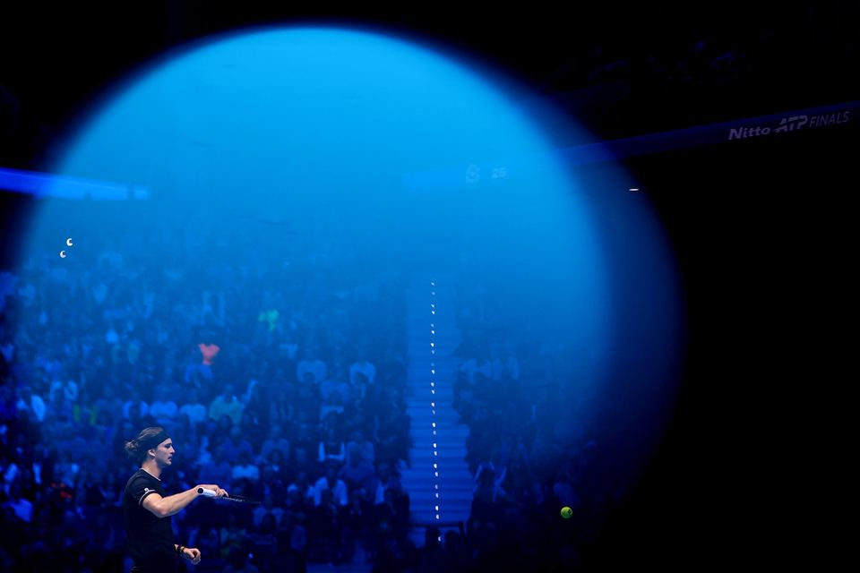

Zverev, el rey cuestionado al que encara Alcaraz: “Soy el único número uno que debe justificarse”

El alemán supera al ruso Medvedev en un duelo insípido (7-6(0) y 6-4, en 1h 27m) y busca redondear en la final (18.00) el gran año de su ascensión, envuelta de críticas
No es otra vía, pero sí otra forma. Hace tiempo que Carlos Alcaraz demostró saber sufrir, de ahí que no sorprenda esta última y trabajada remontada contra Ben Shelton: 3-6, 6-3 y 7-6(1) . Es la 42ª en la élite, habitualmente viento a favor, pero, de vez en cuando, también en contra. No contaba el murciano con esta traba de última hora en el muslo, aunque aun así, a pesar de todo, ha logrado ir sacándolo adelante y llegar lejos otra vez; tan lejos como el desenlace de este domingo (18.00, Movistar+) ante el número uno, Alexander Zverev. Ya viejo conocido el alemán, feliz en un año que, por fin, ha premiado su valía.
Zverev es el octavo finalista que logra llegar al desenlace del torneo sin haber dejado escapar una sola manga. De este modo, sigue los pasos de Ilie Nastase, John McEnroe, Ivan Lendl, Andre Agassi, Roger Federer, Novak Djokovic y Jannik Sinner.
Dejó a Medvedev en blanco en el desempate, algo inédito. El ruso siempre había sumado al menos un punto en esa suerte. Uno mucho más intenso disputó durante los días preparatorios con el propio Alcaraz: 18 minutos y 18-16 favorable al español.